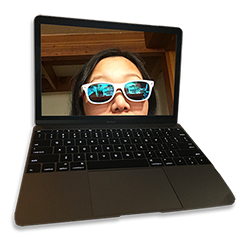
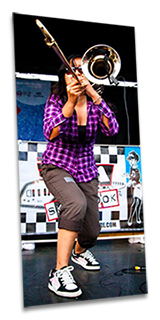
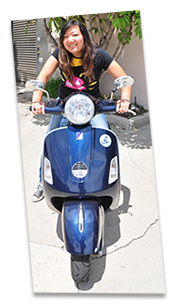
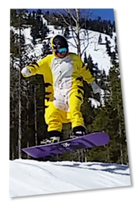

xtine.net
christine cheung

- I'm currently a front end engineer at 18F.
- Previous work experience includes projects for Doubleday & Cartwright, Ignition Interactive, Left Field Labs, RED Interactive Agency, JPL, UCLA, and various failed startups...
- Participated as a speaker at PyCon 2013, PyCon 2012, and DjangoCon 2011.
- Graduated with a B.S. in Computer Science from the University of California, Riverside.
- Started playing trombone in high school, was totally into marching band.
- Played in a few ska bands after college. Highlight was performing on stage with Angelo Moore of Fishbone on the Warped Tour.
- I currently play with the Jazz Foundation of Jackson Hole in the winter.


- I currently own a Vespa GTS250 (modern) and Vespa PX125 (2 stroke).
- A memorable mechanical failure story was when the fuel injector broke off my GTS250 in Mexico during a Amerivespa group ride in 2013. Luckily with the help from Tijuana police(!), I was able to get it safely towed back to San Diego to get it fixed.
- My most adventurous trip was riding and camping all the way up the coastal Highway 1 route from Santa Monica, CA to Vancouver, BC. It took me about 10 days.
- Nearly gave up snowboarding out of frustration in 2013.
- By chance in 2014, I started to live seasonally in Jackson Hole Wyoming, working hard to progress from a beginner to expert rider through lots of practice and determination.
- I started to get into backcountry splitboarding in 2017.
- My quiver consists of a Never Summer Twenty Five, Never Summer Raven, and a Jones Solution splitboard.
